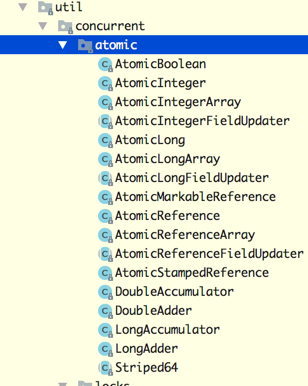
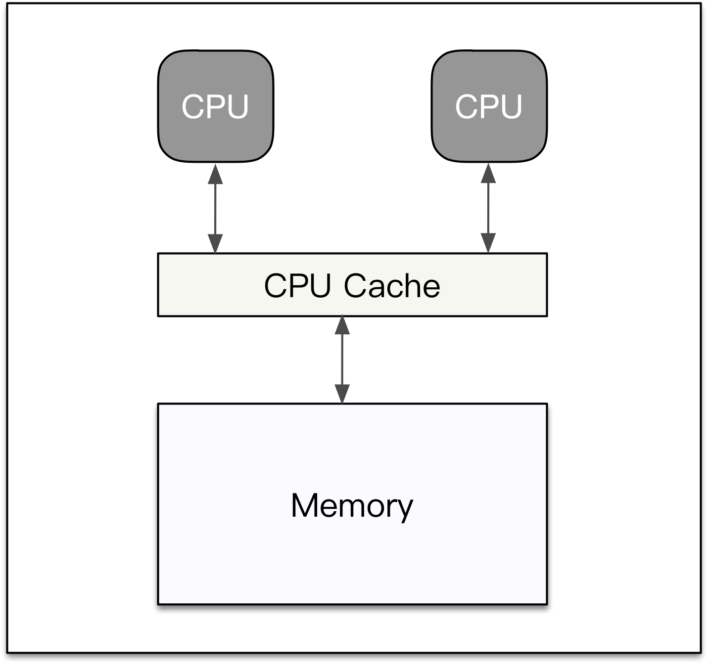
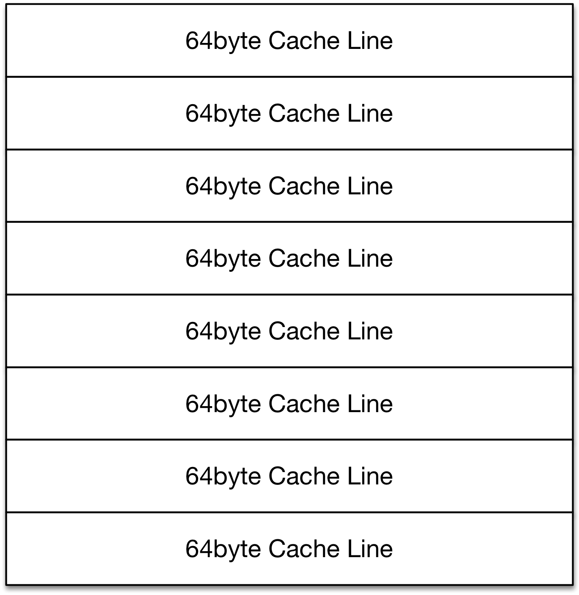

前置知识
- CPU原子指令：不同的CPU架构提供的原子指令有所不同，如：LOCK#信号
- CAS：Compare and Swap (比较并交换)
- 缓存行：Cache Line ，详细介绍
什么是原子操作？(What)
所谓【原子】也即是不可再分割的最小粒子，那么，原子操作就是不可再拆分的操作。
为什么要使用原子操作？(Why)
|
|
什么场景下使用原子操作？(Where-When)
|
|
Java内部是怎么实现原子操作呢？(How)
Java的原子操作类都存放在java.util.concurrent.atomic包下（JDK1.8.0_91一共17个类），主要分为4大类：
- ①-原子更新基本数据类型；
- ②-原子更新数组；
- ③-原子更新引用；
- ④-原子更新字段。
其实现基本上都是对Unsafe类的包装使用。源码分析请看Unsafe类源码解析

①：原子更新基本数据类型：
在atomic包中，原子更新基本数据类型主要有3个类，分别是：AtomicBoolean、AtomicInteger、AtomicLong，下面介绍它们的主要方法：
- AtomicInteger类，常用方法如下：123456789101112131415161718get(): 返回对象的值：return (private volatile int value;)addAndGet(int delta): 以原子操作方式将对象值(atomicInteger) 与 目标值(delta) 相加后，并返回【相加后】的值|__ unsafe.getAndAddInt(this, valueOffset, delta) + deltagetAndAdd(int delta): 以原子操作方式将对象值 与 目标值 相加，并返回【相加前】的值|__ unsafe.getAndAddInt(this, valueOffset, delta)getAndIncrement(): 以原子操作方式将对象值加1，并返回【自增前】的值|__ unsafe.getAndAddInt(this, valueOffset, 1)incrementAndGet(): 以原子操作方式将对象值加1，并返回【自增后】的值|__ unsafe.getAndAddInt(this, valueOffset, 1) + 1getAndDecrement(): 以原子操作方式将对象值减1，并返回【自减前】的值|__ unsafe.getAndAddInt(this, valueOffset, -1)decrementAndGet(): 以原子操作方式将对象值减1，并返回【自减后】的值|__ unsafe.getAndAddInt(this, valueOffset, -1) - 1compareAndSet(int expect, int update): 以原子操作方式比较对象值是否和输入的期望值(expect)相等，如果相等，则将对象值设置为新值(update)，否则不操作|__ unsafe.compareAndSwapInt(this, valueOffset, expect, update)getAndSet(int newValue): 以原子操作方式设置新值，并返回设置【前】的旧值|__ unsafe.getAndSetInt(this, valueOffset, newValue)
注：所有方法都是final修饰的，也即是不可重写。
代码如下：
运行结果如下：
- AtomicBoolean类
自己实现AtomicChar、AtomicFloat、AtomicDouble：
②：原子更新数组：
在atomic包中，通过原子更新方式来更改数组中的某个元素值的类有3个类，它们分别是：AtomicIntegerArray、AtomicLongArray、AtomicReferenceArray，
下面介绍它们的常用方法：
- AtomicIntegerArray类常用方法如下：12
③：原子更新引用：
|
④：原子更新字段：
其他
缓存行
现代的处理器一般都有3级缓存结构，L1、L2和L3，CPU直接访问主存是一个相对比较慢的操作，所以通过3级缓存来提升访存性能。
如果将3个缓存当成一个整体来看待，它就是CPU缓存。缓存的制造成本非常昂贵，它一般要比主存空间小的多。

CPU在读主存的时候，会先将主存的一块数据加载到缓存上，然后在缓存上读取。当CPU写主存的时候，它会首先写缓存，在未来的
某个时间点再一次性将缓存的数据全部刷回主存，这样就可以提高写操作的性能。因为计算机程序数据操作的局部性，CPU连续的指令
倾向于访问相邻地址空间的数据，所以后续的读写操作有很大的概率可以直接在缓存上拿到数据。如果缓存上不存在，那就再去主存上加载进来。
缓存虽然小，但是也不是太小，CPU在加载主存数据时，如果一次性将整个Cache填满，但是接下来的指令访问的数据又不在缓存上，
就会导致读浪费。另外如果只修改了其中几个字节的数据，但是得回写整个Cache到内存，这又会导致写浪费。
所以现代的CPU缓存一般是分行存储的，最小处理单位是一个行，这个行的长度一般来说就是64字节，我们称之为【缓存行】

注意：Java教科书里面为了便于新手理解，不会提及缓存，一般只会说volatile变量直接读写内存。